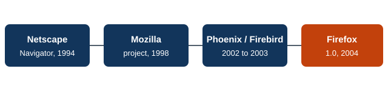

History of Mozilla Firefox
Firefox began as a lightweight spin-off of the code Netscape released to the public. Over two decades it went from challenger to Internet Explorer to the last major independent browser.
Timeline
| Year | Milestone |
|---|---|
| 1998 | Netscape releases its browser source code, and the Mozilla project begins. |
| 2002 | Phoenix 0.1 appears as a browser-only alternative to the full Mozilla suite. |
| 2003 | The Mozilla Foundation is created; Phoenix is renamed Firebird. |
| 2004 | The browser is renamed Firefox, and Firefox 1.0 launches in November. |
| 2005 | Mozilla Corporation is formed to develop and distribute Firefox. |
| 2008 | Firefox 3 sets a record for downloads in a single day. |
| 2011 | A rapid release cycle begins, starting with Firefox 5. |
| 2017 | Firefox Quantum (version 57) ships a faster engine with parts built in Rust. |
| 2019 | Enhanced Tracking Protection turns on by default. |
| 2020 | Mozilla restructures and cuts about 250 jobs. |
Lineage

Three Phases
- Origins (1998 to 2004): Netscape's code becomes the Mozilla project, and a leaner browser, Firefox, is split out of it.
- Challenger (2004 to 2010): Firefox pulls users away from Internet Explorer with tabs, add-ons, and better standards support.
- Rebuild and privacy (2011 to today): faster releases, the Quantum engine work, and a focus on tracking protection as Chrome takes over the market.